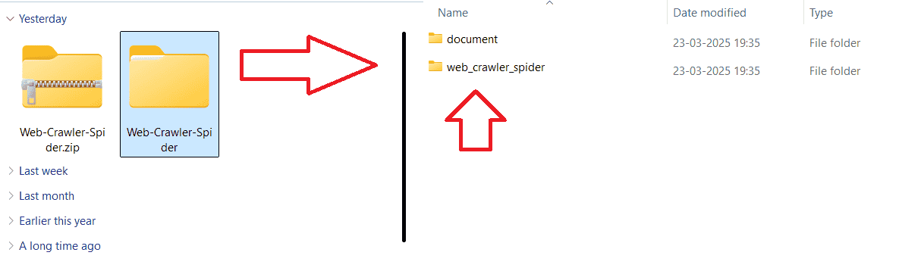
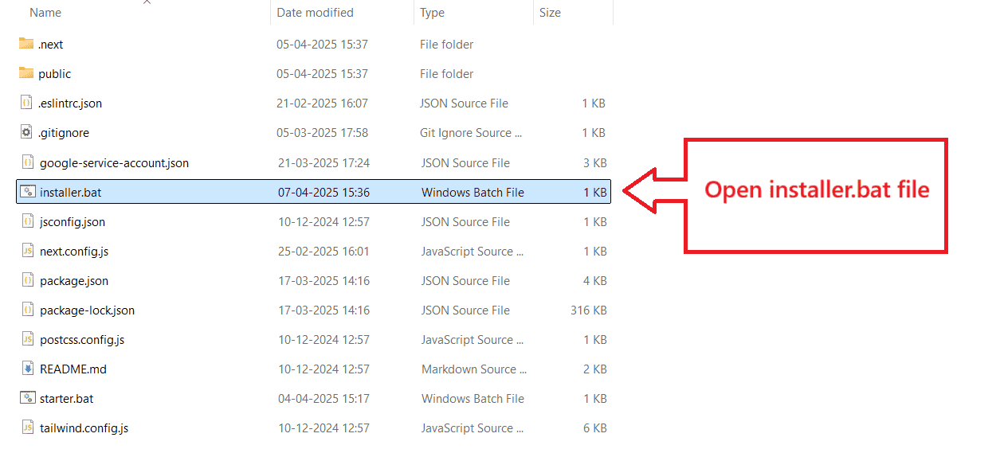
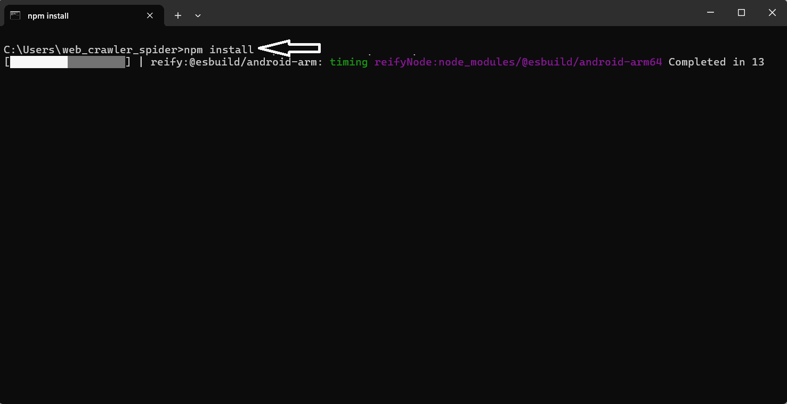
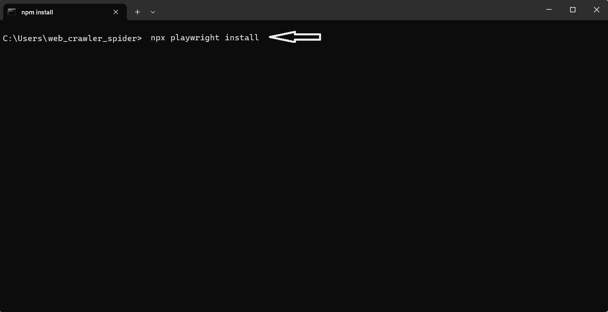
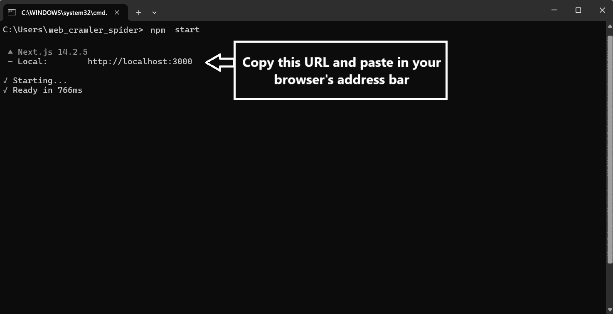
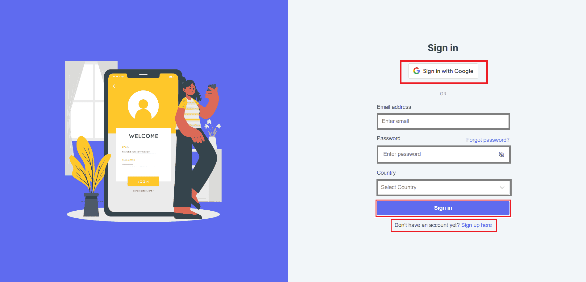
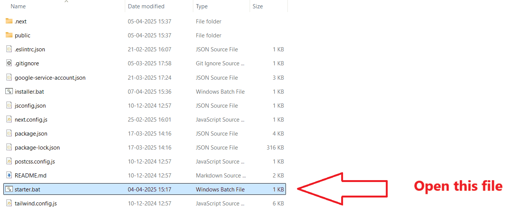
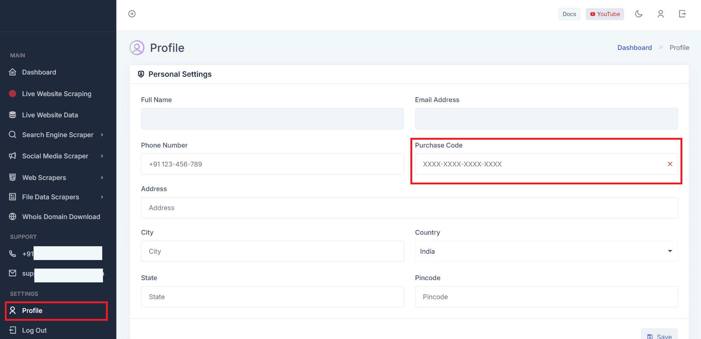

Documentation
An advanced web scraping solution that uses multiple legal tools to efficiently extract and manage data, ensuring full compliance with relevant regulations.
Installation
Getting Started
Welcome and thanks for choosing our product :)
It is our great pleasure that you chose our scraping tools. We are so happy to have you as our customer! Your decision to trust us with your scrapping needs is something we don’t take lightly, and we are really excited to accompany you on this journey.
Our team has worked hard to create a product that is not only powerful but also user-friendly, and we’re confident that it will help you achieve your goals with ease.
Installation
Watch On YouTube
For a comprehensive, step-by-step installation guide, we also offer a detailed instructional video on YouTube.
Watch NowInitial Setup
First download the zip file by
sign in or
signup.
Once you've downloaded the product, you’ll find a file named
Web-Crawler-Spider.zip. Simply follow the steps below to get started:
Extract The Zip File
-
Locate the downloaded file,
Web-Crawler-Spider.zipand simply unzip it. - After unzipping the file, open the folder and navigate to the
'/web_crawler_spider'

Prerequisites
Before running the application, make sure your system meets these requirements:
Download Node LTS version.
This project was developed using Node.js v20.11.0. You can download the same version below, based on your system:
- Windows (x64): node-v20.11.0-x64.msi
- Ubuntu/Linux (x64): node-v20.11.0-linux-x64.tar.gz
- macOS (Apple Silicon): node-v20.11.0-darwin-arm64.tar.gz
- macOS (Intel): node-v20.11.0-darwin-x64.tar.gz
To check if Node.js successfully installed, follow below steps:
- Windows Users: open the command prompt using
'Win + R and type cmd'and press enter and run:
'node -v' -
Ubuntu/Linux Users: Open your terminal and run:
'node -v' -
macOS Users: Open Terminal (press Cmd + Space, type "Terminal", then press Enter) and run:
'node -v'
Note: If you have Node.js version below 20, download and install NVM (node package manager) to manage and switch nodejs version into v20.11.0
Follow the official NVM documentation for installation. Read docs:
to install it.
Steps To Install And Run The Application
-
Once you opened
/web_crawler_spider, run the'/installer'file.Note: If the /installer file will not work on your system, checkout our Alternate option.

Note: Ensure a stable internet connection, as the process may take time.
-
Open your project directory /web_crawler_spider in terminal or command prompt:
For Windows: Type cmd on browser's address bar and press enter.
For macOS: Open the folder in Finder, Right-click the folder (or inside the folder background), Choose "Services" - "New Terminal at Folder".
For Ubuntu / Linux: Open the folder in Finder, Right-click the folder (or inside the folder background), Choose "Services" - "New Terminal at Folder".
Now run follow below commands:npm install:
npx playwright install:
Alternate (Optional)
Note: If the /installer is not supported or not working on your system, follow the steps below:
Start The Application
-
Now simply run the
npm startcommand to start the server:

- After a few moments, the application will generate a URL (e.g., http://localhost:3000). Simply click on this URL and open it on your preferred browser to access the application.
- Now you will see the below interface on your browser. Just login or create a new account and start your work!

🎉Congratulations! Your setup is complete.🥳
⚡Quick Start
Note: After the installation process, you don't need to follow each step to run the application. Instead, simply open the project folder and open file by name /starter this will start your server (Only for Windows User):
-

-
That's it! Your application is ready to use at:
http://localhost:3000.
Purchase Code
What is an Access or Purchase Code?
When you purchase our product, you will receive a purchase code via email. This code acts as your key to unlock full access to the product.
Why Do I Need It?
The purchase code is essential to gain unrestricted access to all the features and functionalities of the product. Without it, your usage will be limited.
How Do I Get It?
Once you complete the purchase, the access or purchase code will be sent to your email. Check your inbox (and spam folder just in case) for an email containing the code.
How to Apply the Purchase Code?
To apply the purchase code, go to the "Profile" section of your account. Look for the "Purchase Code" option and enter the code you received. Once applied, you'll have full access to the product.

Features
- Easy sign-in and sign-up
- Scrape data from our Live website scraper.
- Scrape data from Search engines such as Google.com, Bing.com, Yahoo and more.
- Scrape data from 'Maps.google.com'
- Scrape data based on Keywords such as "Schools contact details in London."
- Instant Phone calls, Text SMS, WhatsApp Message and Email sending feature.
- Scrape text content from images.
- Scraped data may be up to 80% accurate
- Scrape email IDs, contact numbers, website URLs, and more
- Receive filtered data
- Download data in CSV file format
Services & Tools
Explore our top tools & services and generate your business leads.
Bing Search Scraper
Collect Bing search data: URLs, titles, and contacts.

Yahoo Search Scraper
Filter out the results from Yahoo search engine and get important data.

DuckDuckGo Scraper
Get search results from DuckDuckGo, including websites, description, and contact details.
Google Search Scraper
Extract search results from Google, including titles, URLs, and descriptions.
Google Map Scraper
Scrape business details from Google Maps, including name, phone, and address.
Live Website Scraping
Get the contact information, social media links, and more data directly from live websites.

Live Website Data
Instant business leads and faster engagement, powered by our next-gen live website data.

Facebook Scraper
Get the Followers, Phone, Email and more public data easily from Facebook.

YouTube Scraper
Know about subscribers, viewers, and other important data of YouTubers.
Website Data Scraper
Extract valuable data from websites for research and marketing.
Business Directory Scraper
Extract contact details from online business directories easily.
Document Data Scraper
Extract data from CSV, Excel, Doc, and other documents automatically.
Image Data Scraper
Extract text and contact information from images with OCR technology.

Whois Domain Database
Retrieve domain ownership details like name, address, and country.
Change Log
::VERSION 9.0 RELEASED::
- Added a new tool called Website URLs Checker to check whether a website is active or inactive.
- Implemented Verified Domains, a tool to filter and retrieve a list of verified domains along with their registered countries.
- Added the ability to generate latitude and longitude for specific map addresses in Google Map Scraper.
- You can now retrieve the CID (Customer ID) of map addresses using Google Map Scraper.
- We have fixed some bugs and improved functionalities.
::VERSION 8.0 RELEASED::
- Implement Google Sign-In feature.
- Added YouTube demo videos as tutorials for each scraper tool.
- Users can now change their country to receive a relevant phone number for that region.
- Fixed several bugs related to the UI and core functionality.
::VERSION 7.0 RELEASED::
- Introduced a Live Website Scraper for retrieving real-time website data.
- Added Yahoo Search Scraper functionality.
- Integrated DuckDuckGo Search Scraper.
- Launched Facebook and YouTube Scrapers.
- And fixed some bugs.
::VERSION 6.0 RELEASED::
- Added Bing Search Scraper.
- Improved Google Search Data Accuracy, Users get more precise results.
- Enhanced Phone Number Accuracy in Google Maps Scraper, Better extraction reliability.
- Added Social Media URL Extraction, Now available in Website Data Scraper.
- Bug Fixes & Performance Improvements, General enhancements for a smoother experience.
::VERSION 5.0 RELEASED::
- Google Search Scraper now available on Cloud Service
- Google Maps Scraper now available on Cloud Service
- Live Website Data now hosted on Cloud Service
- Website Scraper now available on Cloud Service
- Introduced Direct Call & Text SMS features
- Added Direct WhatsApp Messaging & Email sending features
- Video tutorial available on YouTube
- Enhanced data response speed
::VERSION 4.0 RELEASED::
- Added Business Directory Scraper
- Added Whois Domain Database
- Introduced WhatsApp Messaging Feature
- Introduced Email Sending Feature
::VERSION 3.0 RELEASED::
- Added Image Data Scraper
- Introduced New Dashboard UI
- Fixed Minor Bugs
::VERSION 2.0 RELEASED::
- Added Document Data Scraper
- Redesigned Dashboard
::VERSION 1.0 RELEASED::
- Initial Release
Thank You for Choosing Us!
We’re dedicated to supporting you — thanks for being part of our journey!